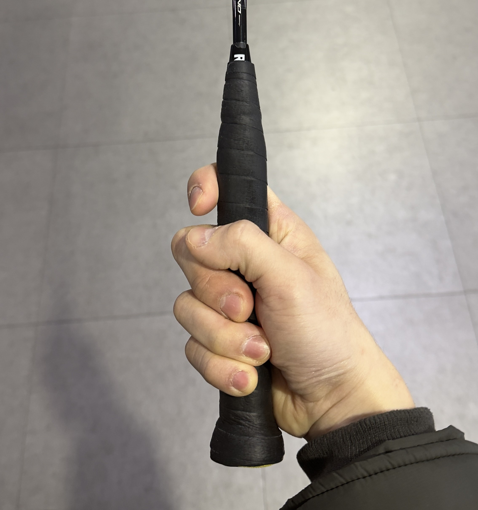

그립 가이드 이미지
* 라켓 헤드를 정면으로 돌린 채, 손만 확대하여 비춰주세요

⚠️ 올바른 교정을 하기 위해 촬영하시기 전,
아래 가이드라인을 꼭 읽어주세요!
🏸 올바른 그립 가이드 🏸
- 1. 라켓 면이 바닥과 수직이 되도록 세워주세요.
- 2. 손잡이를 편안하게 악수하듯 감싸 쥐어주세요.
- 3. 엄지와 검지 사이의 V자 부분이 손잡이 왼쪽 대각선 모서리에 오도록 해주세요.
- 4. 검지를 살짝 위로 올려 방아쇠를 당기는 듯한 여유 공간을 만들어주세요.